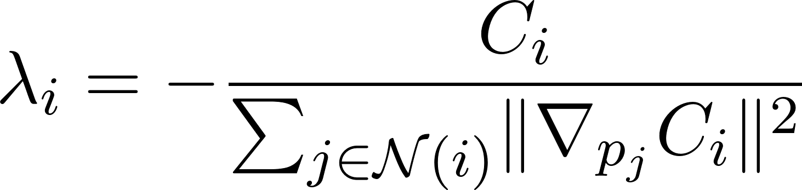

CS184 Computer Graphics and Imaging - Spring 2023
Final Project - Particle-Based Fluid Simulation
Jonathan Guo, Andrew Huang, Wentinn Liao, Alison Siebert
Abstract
Our final project attempts to simulate uniform fluid interactions in a solid environment using a particle based model, and improve the dynamic characteristics of movement while still preserving stability. This improved stability comes from modifying the incompressibility updates to improve continuity across the simulation and therefore allowing us to increase vorticity and decrease viscosity without blowing up, and maintaining surface cohesion. We combine ideas from multiple papers as well as bring many of our own ideas to improve the efficiency and quality of our simulations. As opposed to modeling the standard forces shown in the Navier-Stokes equation, our model implements forward simulation with external forces, collision, incompressibility, vorticity, and viscosity. Computation of neighbor particles uses a static array based on the fluid parameters and the initialization parameters of the fluid. Each simulation step is followed by mesh generation using the cube marching algorithm, facilitated as well by the array used for neighborhood computation. Our model is flexible enough to model a variety of different fluids with different densities, viscosities, etc.
Technical Approach
Code Structure
Our code is based on the structure used for Project 4, however with many modifications. We similarly define a Fluid class that contains methods lending to the computation of the forward pass and rendering. The fluid itself is parameterized using the struct FluidParameters that defines the static properties of the fluid, such as density, molar mass, average particle spacing, and RMS velocity. Our particles are considered as point masses for the sake of forward simulation, although the proportional particle radius is kept in mind as an approximate cell size for the cube marching algorithm. Once the positions of the particles have been determined, we utilize the cube marching algorithm to construct a triangular mesh of the surface of the fluid. This mesh is then passed into the Project 4 shaders for rendering.
Mathematical Definitions and Constants
It is obviously impractical to simulate fluids to the number of particles that would exist in real life. However, we did our best to scale the necessary constants to produce the best accuracy possible. A core function that is essential to the entire project is the kernel function, which models a particle’s degree of influence on neighboring particles. It is used to approximate local density, gradient and curl for incompressibility and vorticity updates, and viscous flow. The kernel function we used is defined as
denoted for short, where and are the positions of the particles, is a constant known as the smoothing radius, and  is the normalized distance between the two particles, calculated by dividing the Euclidean distance by the smoothing radius. It is important for future math to note that . Thus, particles beyond twice the smoothing radius are approximated to have no influence on a particle, and therefore, the size of the cells we use for neighbor computations is . The initial method of computing the appropriate smoothing radius was to simply scale up the average distance between molecules. This would be calculated as
is the normalized distance between the two particles, calculated by dividing the Euclidean distance by the smoothing radius. It is important for future math to note that . Thus, particles beyond twice the smoothing radius are approximated to have no influence on a particle, and therefore, the size of the cells we use for neighbor computations is . The initial method of computing the appropriate smoothing radius was to simply scale up the average distance between molecules. This would be calculated as
Where  is the molar mass, is Avogadro’s number, and are the number of particles that would exist in reality and would be used in the simulation respectively, and is the average spacing between particles. The local density estimator is calculated as
is the molar mass, is Avogadro’s number, and are the number of particles that would exist in reality and would be used in the simulation respectively, and is the average spacing between particles. The local density estimator is calculated as
where denotes the neighborhood of particle . However, this empirically violates the key intuition that if we randomly sample particles from the initialization volume, then the average density should equal the true density observed in reality. To fix this required scaling up our initial computation of the smoothing radius. It was experimentally determined that this should be done by a factor of which also produced better results in terms of stability.
Incompressibility and Tensile Instability
The original paper modeled incompressibility as the constraint
where is the natural observed density of the fluid. It took a Newton’s descent approach, taking the gradient of a single constraint with respect to the position of all its neighbors to compute a constant

by which to step. It then made this step by computing
Our method however deviated from this in many ways. First was the observation that the step taken by Newton’s descent on the sum of constraints is not necessarily the sum of the steps that Newton’s descent would take on the individual constraints. Therefore, rather than taking the gradient of a single constraint with respect to multiple points and superimposing, we instead took the gradient of superimposed constraints with respect to a single point. A premature form of this looked like
which also preserves integrity of units. The second observation made is that particles should care less about adjusting to satisfy the constraints of farther particles than nearer ones, including itself. In the center, this is generally fine, but near the outside, this produces motivation to move even further out. Therefore, we modify the loss function to be the weighted sum of the constraints, where the weights are proportional to the kernel values with respect to particle .
The third modification we made is based on the observation that incompressibility means that fluids cannot be compressed beyond a certain density which means that particles compressed beyond natural density should be motivated to move further apart. However, there is no reason that particles that occur more sparsely should be motivated to become even sparser. The original constraint indiscriminately separates particles which causes those on the outer surface to go unstable. Therefore, we make a modification to the constraint function to then become
which only penalizes the particle if a neighboring one has a higher local density than should be. In practice, this means for both the numerator and denominator, we only sum the loss term or its gradient if the local density exceeds the natural density of the fluid. All these changes improved the stability of our simulations, however still resulted in particles flying out more than they should. The final modification notes that a Newton’s descent is geared towards a fast convergence to the local optimum. However, if the local optimum is reasonably far from the current state, then a fast convergence clashes with the intuition of continuity that should be present in a simulation. Therefore, we found it more natural as well as efficient to instead use gradient descent. This reduced the update to
where is a step size chosen to be based on empirical results. This is added to the paper’s proposed update for tensile instability
to which we made no modifications.
One final thing to note is the distinction between collision and constraint with respect to the wall surfaces. When particles moving quickly collide with a wall, they tend to bounce back at some speed and direction roughly proportional to the incoming velocity. We found it, however, more stable to differentiate between collision object updates during movement and during incompressibility adjustment. We therefore added an additional functionality constrain vs collide, in which constrain merely modifies the particle position to be back within bounds without modifying any other properties.
Vorticity
Our implementation of vorticity makes a slight modification to account for the ratio of the volume to the number of particles. Because debugging is a large part of the project, implementing vorticity along with other terms as stated in the original paper yielded a wide range of significantly different results across different numbers of particles, some which became unstable and others which didn’t. This required us to make our equations robust to this ratio. Thus, the curl velocity is modified to be
The total acceleration due to vorticity is then defined as
In our case, we chose to be .
Viscosity
The viscosity term was the easiest to implement, following the original paper exactly. The viscosity update is given by
where . However, this term can be varied to produce a large range of effects. A large viscosity produces a smoother surface and better surface cohesion while lower viscosity allows us to see individual droplets.
Adaptive Sampling
If there is not very much movement, it is not very essential to sample movement as frequency as often. On the contrary, at an instance where there is much movement, it is more essential to have more samples per second in order to reduce error. As a result, we briefly attempted adaptive sampling. In our simulate function, we include a time step duration which was determined by clothSimulator depending on the velocities and forces on the particles. This would allow us to increase the frame-per-second in the more important parts. Moreover, we could use linear interpolation during the less-sampled periods to get accurate approximations for where particles are in these cases.
However, one problem that we came across is that given our long rendering times and the large discrepancy between the most and least active frames, it would be almost impossible to get satisfactorily-looking linear interpolation in a reasonable amount of time.
Spatial Hashing and Basic Mesh Structure Properties
Similar to Project 4, we utilize spatial hashing to increase the performance of our code. However, unlike Project 4, our liquid is already confined within a container. This means that we can utilize a predefined static 3-dimensional array as our hash table and simply move particles from one index to another when their positions move. (In reality, this is actually a 4-dimensional array, as each index in the original 3-dimensional array is an array of particles).
Cube Marching Algorithm
To render the surface of the fluid, we use the cube marching algorithm. Initially, we divide the fluid up into small cubes. We already have a grid used for spatial hashing, but we subdivide each cell further. Within each cube, we compute a density value based upon nearby particles. The density function we chose was proportional to one over the distance from the particle cubed. Then, our surface is a 3-dimensional contour diagram based on some predetermined threshold value. Within each cube that the surface passes through, there are some corners that have density values below the threshold value and some that are above the threshold value. Given these values, we use a union find algorithm to group neighboring vertices whose value is below the threshold together, and then linearly interpolate the outgoing edges (edges that connect to vertices whose value is higher than the threshold) to compute the position of a corner of the mesh. Finally, we construct a triangular mesh from these positions.
However, the papers we looked at utilized a different approach. Because each cube has 8 corners, there are only 28 = 256 possible configurations of vertices (above/below the threshold, if we view that as a boolean value). Furthermore, a lot of these configurations are actually isomorphic to other configurations through rotations and/or reflections. For example, there are a total of 8 configurations where exactly one corner has value below the threshold, but these 8 configurations are equivalent to each other (these are also equivalent to the 8 configurations where there is exactly one corner with value above the threshold); with just this one case, we've already reduced the number of configurations by 16 - 1 = 15. In total, the paper presents 15 unique configurations. Given these configurations, the paper hard-codes which edges pass through the surface (i.e. connect a vertex with value above the threshold with a vertex with value below the threshold). Finally, the paper uses interpolation to compute the corners of the triangular mesh, which we have done as well.
We utilized a union find approach because we felt that it was easier to implement as well as more technically challenging (especially when compared to hard-coding a bunch of values). There are some immediate benefits to choosing this approach as opposed to hard-coding. For example, it would take a whole lot of computation to create mesh triangles with vertices not on either cube vertices or edge midpoints using the hard-coding approach, but it’s a lot more natural using our method. However, our approach does also have some downsides. For example, it does run slower than the hard-coded method, as ours needs to compute the connected components while the hard-coded method only needs to index into an array.
Renderer
Finally, to render the mesh, we utilized the shaders that we created in Project 4. The shaders we considered included mirror, normal, Phong, and texture. We thought that the best shader in this case was the mirror shader, due to its reflective qualities that are very similar to water's reflective properties.
Problems Encountered
We encountered a variety of problems while implementing our project. To start, we had to figure out a way to convert all mentions of Cloth and ClothParameters into Fluid and FluidParameters instead. This was more difficult than expected because we had to comb through the entire codebase and try to understand a lot of the code that we did not need to deal with in project 4. This includes, for example, both how the clothSimulator is actually rendered in main.cpp, and how the screen in Project 4 works and screenshots were taken on canvases in Project 1. We also had problems writing the mesh. There were multiple very pesky bugs, including spatial cells on the sides being smaller than cells in the center due to non-integral division.
Lessons Learned
Throughout this project we learned a variety of lessons. For example, we learned how to understand and modify a large codebase that was written by others. We also learned how to understand formulas and ideas from research papers and adapt them efficiently in ways that best fit our needs.
Results
Although we did not have the compute power to simulate larger numbers of particles for a finer grained mesh, we were able to simulate many of the emergent properties that occur in fluid flow at a coarser level. As we can see with these images, our mesh is able to represent a complicated and realistic fluid surface.
As seen in the above image, we are able to render fluid droplets in the air. However, they are pretty big given that our resolution is pretty low. With more compute power, we would be able to increase the resolution, and the fluid droplets would appear smaller as well as smoother.

We have multiple scenarios. Our first scenario [FluidSimulationWithoutMeshFaster] shows our particles without any mesh elements. We can see how the particles bounce off walls and push away from each other. This is run with 5000 particles and water conditions.
Our second video [FluidSimulationMesh1] shows a scenario with relatively high viscosity and high friction on the walls. This causes the water to stick to the walls and itself more. This is run with 20000 particles.
Our last video [FluidSimulationMesh2] shows a scenario with relatively low viscosity and low wall friction. This causes the fluid to bounce up and down more, which additionally makes it take longer to converge.
Slides: CS 184 Final Project Slides
Github: https://github.com/JophiArcana/CS184-Final-Project
Google Drive: https://drive.google.com/drive/u/1/folders/16jpouCX--Z6y6U2r8396WFv_yI8N411H
References
Contributions
- Jonathan Guo - researched and helped implement the cube marching algorithm for mesh creation. Also helped refactor existing cloth code into fluid code.
- Andrew Huang - researched and primarily worked with compatibility with existing project code (i.e. automatic screenshotting for our videos). Also helped out with cube marching and compiled results.
- Wentinn Liao - researched and implemented methods of physics simulation and set up core structure for computation. Implemented spatial hashing, and batch/global computations for kernel, kernel gradient, incompressibility, vorticity, and viscosity. Also implemented multithreading that allowed for nearly 4x speedup of initial code.